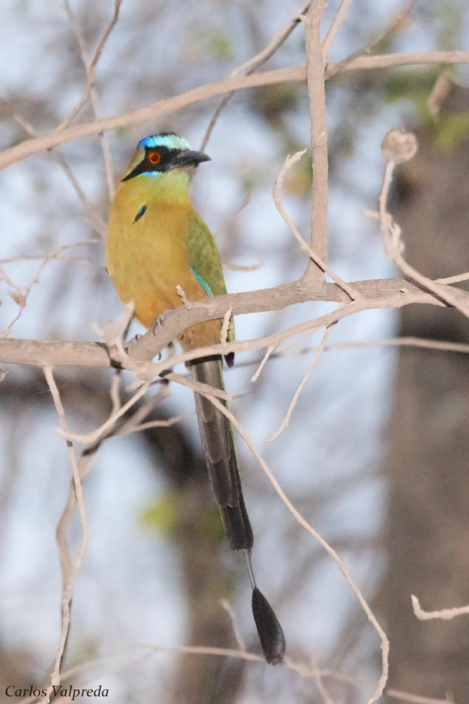
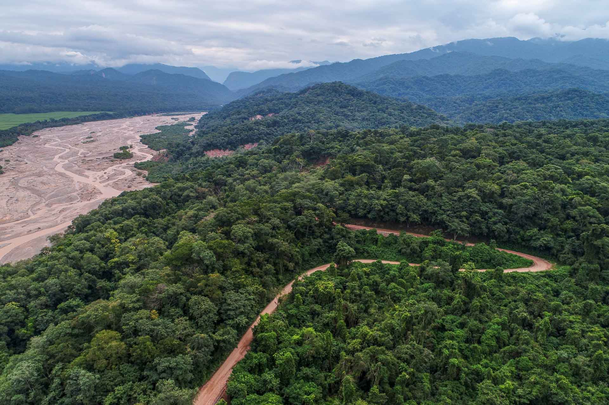
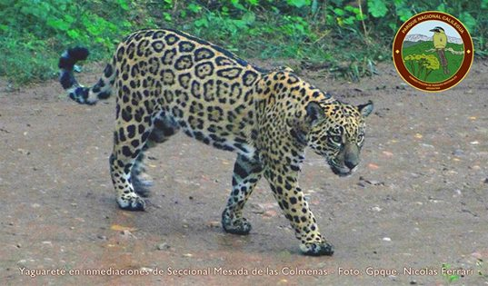
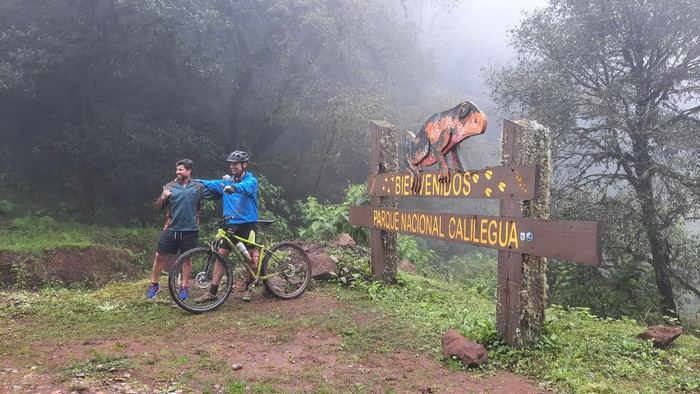
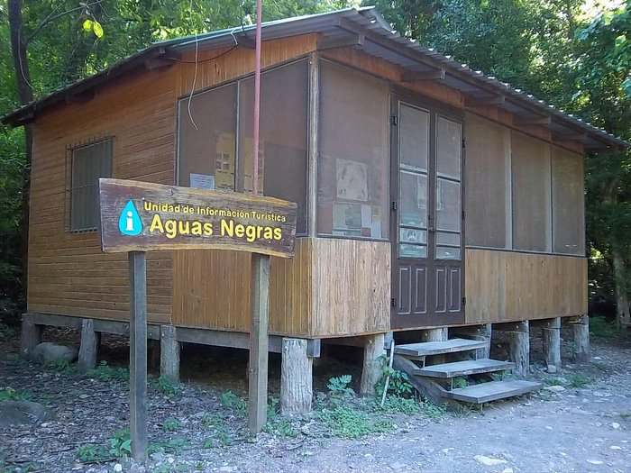
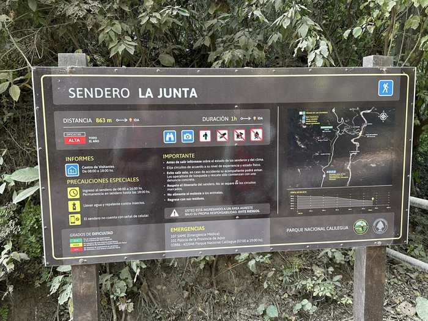

Avistaje de aves
La avifauna incluye mas de 400 especies entre ellas una de la mas emblematicas es el burgo, todo esto se puede contemplar en el parque

Excursion terrestre
Es posible transitar por la ruta provincial 83 el parque,tambien se puede transitarla en bicicleta o en motociclita

Safari fotografico
La riqueza en flora y fauna lo hace ideal para la fotografia

Ciclismo de montaña
Algunos senderos se pueden recorrer en bicileta un recorrido lleno de desafios

Campamento
El campamento en el parque es limitado pero hay alguna areas que lo permiten

Senderismo y trekking
Para esta actividad el registro es obligatorio, los populares son sendero herradura, sendero mesada de las colmonas y sendero a los helechos
